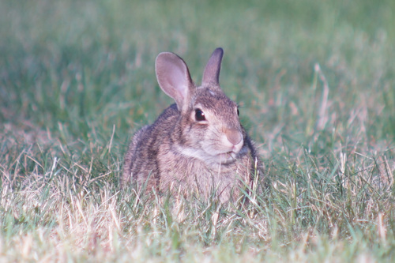
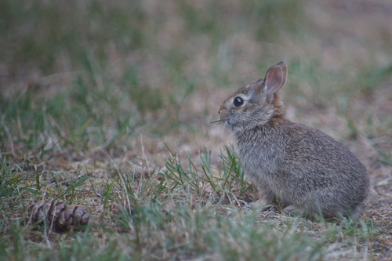
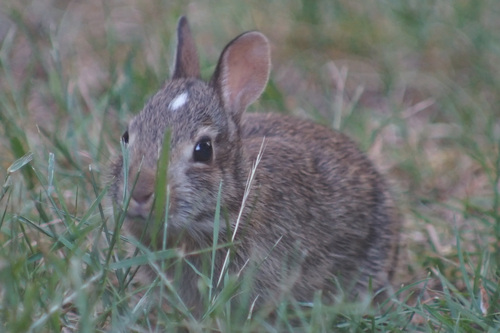
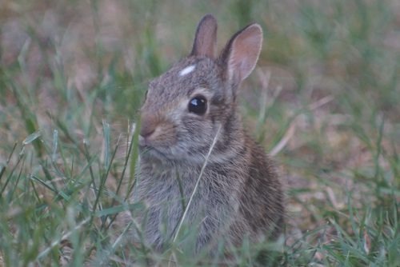
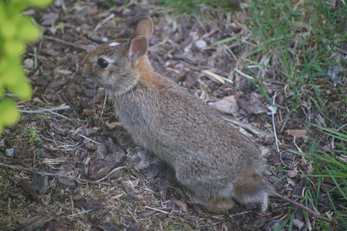
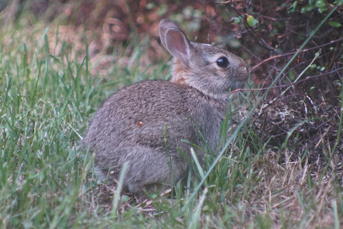
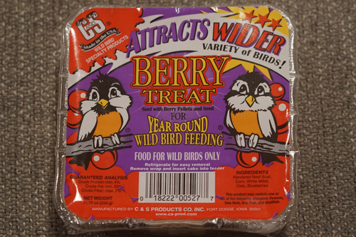
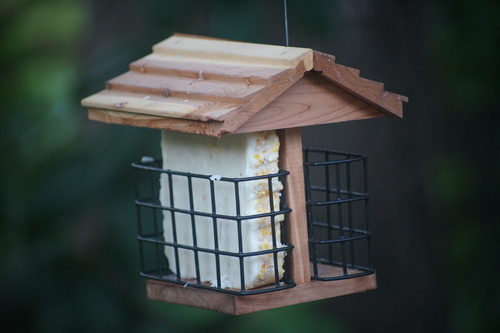
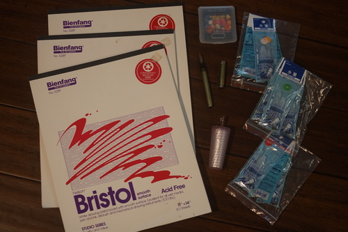

I love these guys. They can hang out in my yard anytime.
You know what they say in bunny season: "BaaaAAAAABY BUNNYYYY BABABBABABAYYYYYY"
    So cute... my little baby bunny....
Ryan presented me with 3 packages of suet and asked me to choose one! I picked this one because of the cute birds on the package.
It was really nasty to touch! I didn't actually know birds ate beef so I was not prepared for what I was about to put in my hands. I hope they enjoy it!
The birdlets weren't particularly interested in it so maybe we put it in backwards? We flipped it later.

FINALLY I found a yard sale suited to me! The elderly woman was cleaning out her crafting stash. Most of it was stacks of scrapbooking paper, but she had some calligraphy stuff and paper pads. I went through the calligraphy box with probably 50 empty Sheaffer carts and found a Esterbrook pen! Kya!! Lucky!!! There was of course a Sheaffer calligraphy pen with plenty of extra nibs in every width, but I left those for a calligraphy enthusiast.
Non functional due to rubber sac issues, as these 70-ish year old pens usually are. It's missing the lever piece.
It was a bit difficult since all the size stickers had fallen off, but I got them sorted out! There's 3 of each size.
I paid $5 for everything I got from the yard sale, so I didn't list prices.